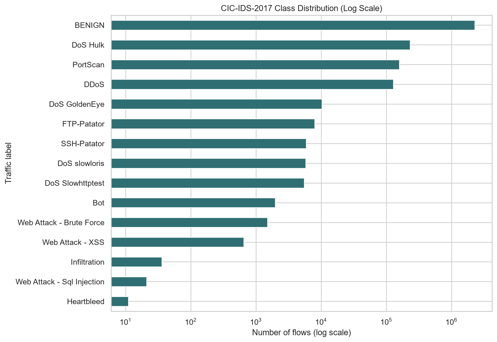
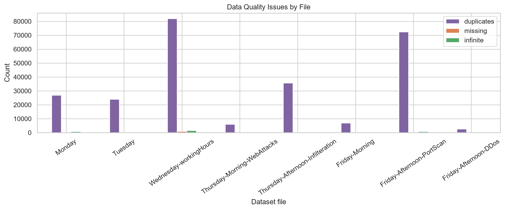
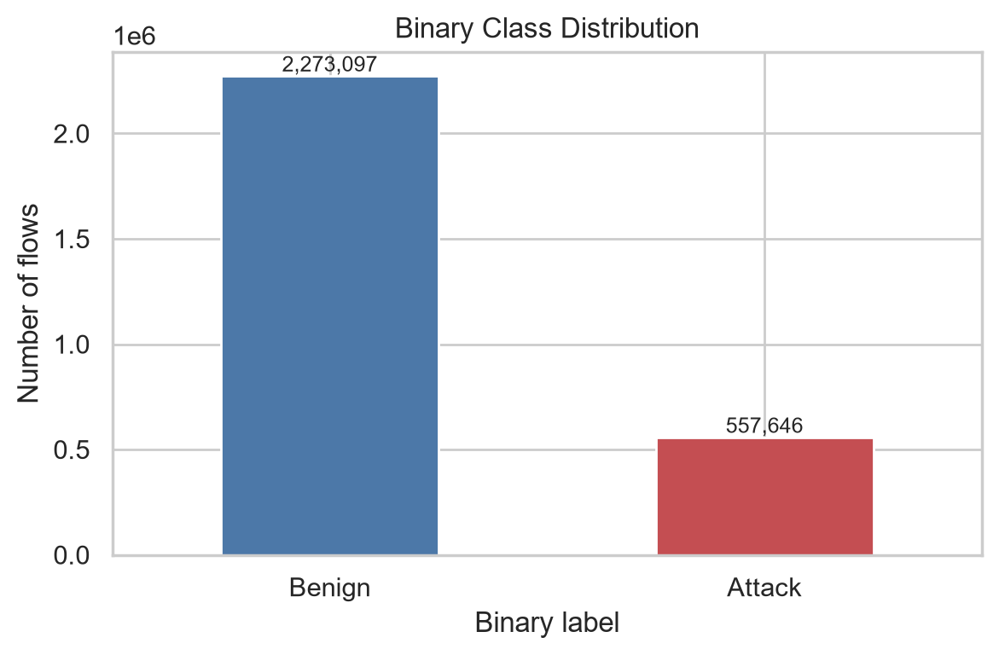
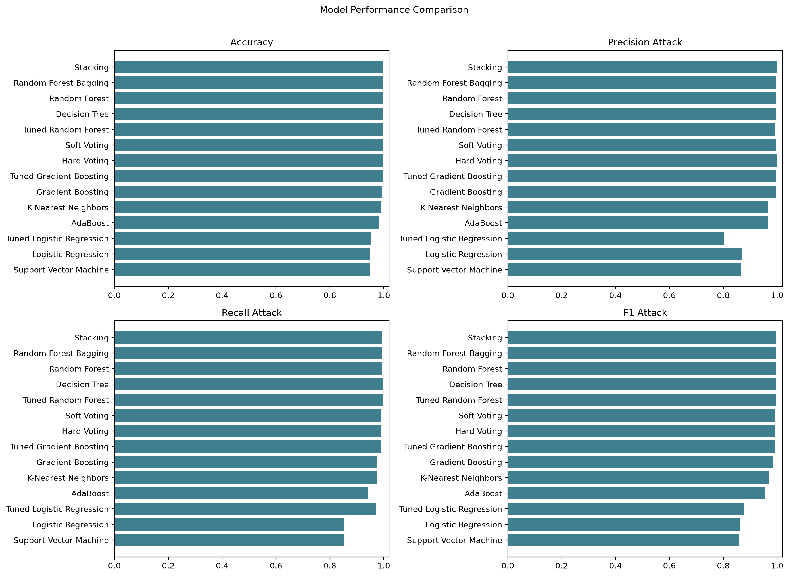
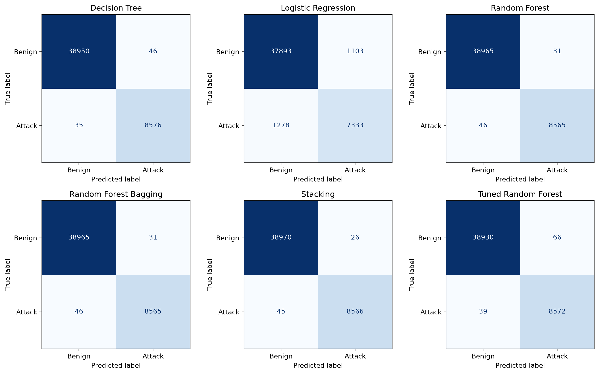
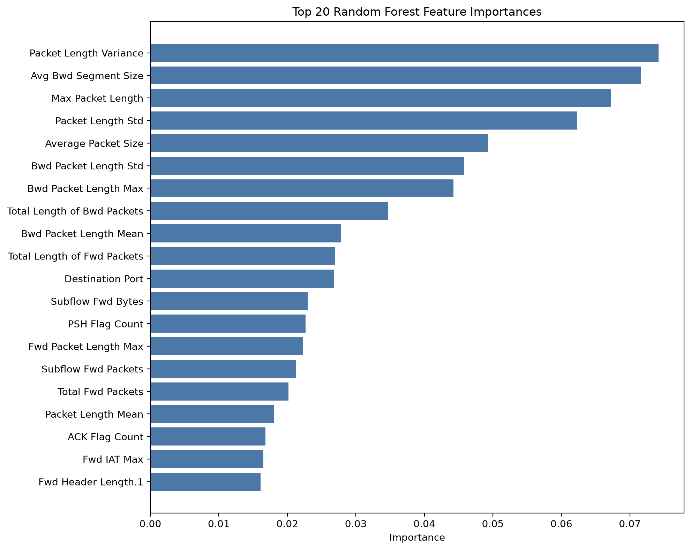

Cybersecurity Attack Detection Using Ensemble Learning
Machine learning-based intrusion detection on CIC-IDS-2017
2.83M
flows audited
78
features
0.9953
Random Forest attack F1
Motivation
- Modern networks produce large traffic volumes.
- Manual intrusion detection is difficult and slow.
- Machine learning can learn suspicious flow patterns.
- In cybersecurity, missing attacks is often worse than false alarms.
Problem Statement
- Input: CIC-IDS-2017 network-flow feature vectors.
- Primary output: Benign or Attack.
- Secondary output: multiclass attack type, if feasible.
- Main comparison: individual classifiers vs ensemble models.
Dataset
- CIC-IDS-2017 from Canadian Institute for Cybersecurity.
- Five working days of benign and attack traffic.
- Flow features extracted using CICFlowMeter.
- Attacks include DDoS, DoS, PortScan, Bot, Brute Force, Web Attack, Infiltration, and Heartbleed.

Dataset Audit
- Total rows audited: 2,830,743.
- Estimated duplicate rows: 308,381.
- Missing values in Flow Bytes/s.
- Infinite values in Flow Bytes/s and Flow Packets/s.
- Web Attack labels required normalization.

Preprocessing
- Cleaned column names and labels.
- Replaced infinite values with missing values.
- Dropped invalid rows and exact duplicates.
- Created binary labels.
- Used 80/20 stratified train-test split.
- Fitted scaling and model transformations only on training data.
Class Imbalance
- Benign traffic dominates the dataset.
- Some attacks have extremely few examples.
- Accuracy alone is misleading.
- Attack recall is a key cybersecurity metric.

Baseline Models
| Model | Accuracy | Attack Recall | Attack F1 | Train Time s |
|---|---|---|---|---|
| Decision Tree | 0.9982 | 0.9957 | 0.9951 | 6.97 |
| Logistic Regression | 0.9499 | 0.8510 | 0.8600 | 3.83 |
| Random Forest | 0.9983 | 0.9943 | 0.9953 | 6.49 |
| SVM | 0.9493 | 0.8517 | 0.8587 | 67.90 |
| KNN | 0.9891 | 0.9742 | 0.9699 | 1.08 |
Ensemble Methods
- Bagging: Random Forest reduces variance by averaging many trees.
- Boosting: AdaBoost and Gradient Boosting learn sequentially from errors.
- Voting: combines predictions from multiple classifiers.
- Stacking: trains a meta-model on base-model predictions.
Ensemble Results
| Model | Accuracy | Attack Recall | Attack F1 | Train Time s |
|---|---|---|---|---|
| Random Forest Bagging | 0.9983 | 0.9943 | 0.9953 | 6.52 |
| AdaBoost | 0.9834 | 0.9415 | 0.9536 | 38.94 |
| Gradient Boosting | 0.9948 | 0.9768 | 0.9854 | 76.31 |
| Soft Voting | 0.9978 | 0.9912 | 0.9938 | 19.51 |
| Stacking | 0.9986 | 0.9951 | 0.9960 | 56.98 |
Model Comparison

Confusion Matrix
Random Forest missed 49 attacks and produced 31 false alarms.

Feature Importance
- Avg Bwd Segment Size
- Packet Length Variance
- Max Packet Length
- Packet Length Std
- Average Packet Size
- Destination Port

Limitations
- Main experiment used a development sample.
- Random split may be optimistic for network traffic.
- Dataset artifacts may inflate results.
- Rare multiclass attacks are difficult to learn reliably.
- Real deployment needs live network testing.
Conclusion
- Ensemble learning outperformed simple linear baselines.
- Stacking achieved the highest F1-score.
- Random Forest was selected as the practical final model.
- Cybersecurity evaluation must emphasize recall, leakage control, and computational cost.